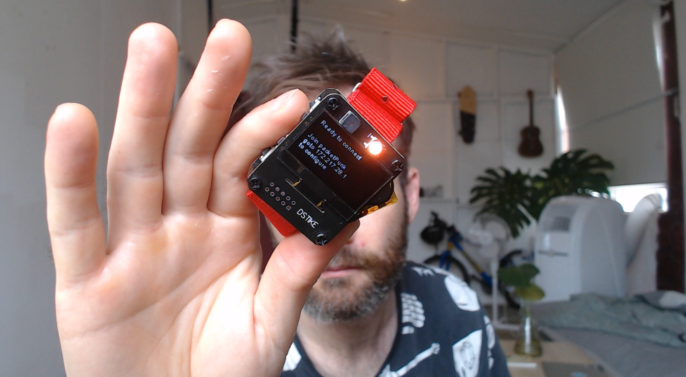
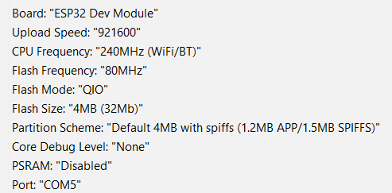

Sold as the dstike esp32 watch devkit, this is an ESP32 microcontroller with an OLED display, a NeoPixel, flashlight, buzzer, battery, charging circuit, SD card slot, and a few buttons.
There are a few different versions, some in this watch form factor, some as single boards, different screens, ESP8266 etc etc. Searching for DSTIKE should bring up some results. These boards were designed for hacking WiFi networks, executing deauth attacks and such.
My interest in the device is as an OSC logger and playback device, for capturing streaming OSC messages in on-body applications.
To this end I developed packetPunk, an Arduino sketch for logging OSC messages on an ESP32.
💾 Get it on Github
🔺🔷🔻🔷🔺🔷🔻🔷🔺🔷🔻🔷🔺🔷🔻🔷🔺
Development notes for the DSTIKE ESP32 watch (OLED version)
These are likely relevant for the similar D-Duino boards, or other ESP32 devkits with OLEDS and SD card readers.
1. Install the environment for ESP32 using board manager
details: https://github.com/espressif/arduino-esp32
2. Install OLED library
Search for “ESP8266 and ESP32 Oled Driver for SSD1306 display” in library manager
more details: https://github.com/ThingPulse/esp8266-oled-ssd1306
3. Install Adafruit NeoPixel Library
Search for “Adafruit Neopixel” in library manager More details: https://github.com/adafruit/Adafruit_NeoPixel
4. Upload example sketch
https://github.com/lspoplove/D-duino-project/blob/master/ESP32WatchDev/ESP32WatchTest.ino
5. Build settings

6. Working with SD cards
This is a particularly useful sketch outlining SD card file procedures